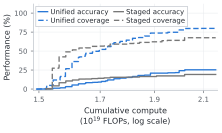
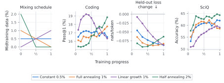

Illustrative data schedules
Best observed performance

Training complete
Foundation models learn from general text, curated examples, and feedback on their own responses. These sources usually enter through separate stages: pretraining, midtraining, supervised fine-tuning, and reinforcement learning. Each stage has developed its own training recipes, infrastructure, and criteria for success.
We study a different organization of this learning process. In unified training, static datasets and reward-weighted model generations supply examples to a common likelihood-based training algorithm. Their proportions can change throughout training, allowing data sources to overlap instead of appearing only in succession.
The distinction matters beyond the choice of training loss. A midtraining dataset can affect immediate performance, the ability to learn from RL, and how much earlier knowledge the model retains. Through controlled reasoning experiments and a larger model trained with heterogeneous data, we examine these interactions across the training process. The results show why judging each stage only by the checkpoint it produces can miss benefits that emerge later.
1. A common training algorithm
Pretraining, midtraining, and supervised fine-tuning (SFT) already share a basic operation: increase the likelihood of the text supplied to the model. They differ in where that text comes from and which tokens contribute to the loss. RL appears different because the model generates responses, receives rewards, and uses that feedback to improve its behavior. The question is whether the resulting update can also be expressed as likelihood fitting.

Our starting point is Maximum Likelihood Reinforcement Learning (MaxRL). Consider a reasoning problem whose answers can be checked automatically. The model produces several responses, some correct and some incorrect. MaxRL learns from the correct responses, with weighting that accounts for how often the model succeeds on that problem. At the population level, its update is exactly likelihood fitting to the model’s distribution of correct responses for each prompt.
This is more specific than collecting all correct answers and treating them equally. An easy prompt can yield many correct responses, while a difficult prompt yields only a few. MaxRL averages over the correct responses within each sampled prompt, so a prompt does not contribute more merely because more of its attempts succeeded. With a finite sample, a prompt for which no attempt succeeds contributes no update.
We extend this likelihood construction to responses from a generator that can differ from the model being optimized, and show how the resulting targets can be combined with static data in one objective. The trainer can sample examples from the mixture and apply the same likelihood loss, whether an example comes from a corpus or from rewarded generations. Generation and optimization can consequently proceed independently. When the generator differs from the current model, this fits the generator’s successful-response distribution; it is generally not the current model’s on-policy MaxRL gradient.
Conventional staged training is a special case that supplies the sources in succession. Unified training also allows them to overlap and change in proportion. The formulation extends to other suitable RL objectives and continuous rewards through different targets or weights; this interpretation is specific to that family of RL updates. Generation and reward evaluation still construct the RL data. What is shared is the rule used to learn from it.
From the formulation to a shared trainer
Every training example is represented as a token sequence with a weight for each token. Corpus tokens receive unit weights. SFT masks prompt tokens and trains on response tokens. RL uses the same format, with response weights determined by rewards and the sampled success rate. A single batch can therefore contain static text and RL generations, processed by the same training code.
In our implementation, the trainer averages the weighted token losses across the combined batch. The relative contribution of the sources follows the realized token mixture, so changing the amount of data from a source changes its contribution to the update. A shared buffer connects this trainer to generators, which produce and evaluate responses using a recent model checkpoint. The trainer samples from the buffer and periodically publishes its updated weights. These operations run asynchronously.
The practical consequence is that data selection, proportions, and timing can be varied within one training system. This gives us a way to study the full training process without committing in advance to a fixed sequence of stages. It does not, by itself, tell us which mixture is best—that is the empirical question.
2. Reasoning, generalization, and data reuse
We begin with a controlled experiment that follows the entire training pipeline. A 124M-parameter model learns from a fixed 20B-token pretraining corpus, a fixed 510M-token corpus of worked reasoning puzzles, and rewards for solving puzzles itself. The worked solutions demonstrate underlying reasoning operations; RL introduces new combinations of those operations. This lets us study how midtraining prepares the model to learn beyond the demonstrated patterns.
Staged training uses the corpora sequentially before RL. Unified training mixes midtraining data into the final part of pretraining and continues using it during RL. We vary how much of the fixed midtraining corpus each model processes. Larger amounts therefore mean more reuse of the same data, rather than access to new examples.
We distinguish three evaluations. Base keeps puzzle sizes within the range represented in midtraining. Extended introduces larger puzzles during RL. Extended generalization evaluates those same Extended models on still larger puzzles, absent from both midtraining and RL. The final comparison separates performance on the RL task from generalization beyond its training distribution.
In the figure below, darker curves use more midtraining data during pretraining; moving right increases the amount used during RL. This shows how both choices affect the final model, rather than reducing each approach to its single best configuration.

The best unified configurations outperform staged training on both RL tasks, and the advantage extends to unseen larger puzzles. The relative improvement is greater on this generalization evaluation. The model’s gains therefore extend beyond the problem sizes and reasoning patterns demonstrated in the midtraining data.
The curves also show that the fixed corpus remains useful after the model has already processed it. Unified training benefits from more midtraining data during pretraining, including amounts corresponding to roughly two and four epochs over the corpus. In staged training, increasing the midtraining budget beyond its best-performing configuration instead reduces final accuracy after RL.
The amount mixed during RL has a more task-dependent effect. In Base, accuracy peaks at an intermediate mixture for the strongest initialization. In Extended and Extended generalization, larger RL mixtures generally help over the tested range. Data reuse is therefore not just a question of how many times to train on a corpus. Its value also depends on which other sources accompany it and what the model is learning at that point.
3. Comparing the full training budget
The preceding comparison fixes the number of RL updates. Different mixtures nevertheless require different amounts of compute. To test whether the gains survive this accounting, we include the work done during pretraining, midtraining, RL generation, and model updates, then compare performance within each total budget.
Each thin curve below follows one configuration through RL. Colored curves show unified training; gray curves show six staged configurations with different midtraining budgets and learning rates. The open circles mark performance before RL. The black frontier answers a practical question: given a budget, what is the best result among the configurations and checkpoints tested? This lets both approaches vary their midtraining allocation and the duration of RL.

Staged training remains competitive over part of the compute range, particularly for task accuracy at intermediate budgets. Unified training reaches higher accuracy and coverage at larger budgets. The benefit is especially clear on unseen larger puzzles: within the largest staged budget, unified training reaches 61.5% coverage, compared with 44.2% for staged training.
These frontiers describe the configurations we tested, rather than a universal optimum or a predictive scaling law. Accuracy and coverage can also select different checkpoints. The implication is nevertheless useful: the gains persist when the additional training work is counted. Allowing data sources to overlap changes how a fixed budget can be allocated, and the preferred allocation depends on both the available compute and the capabilities being evaluated.
4. Learning reasoning while retaining earlier capabilities
Improving on a specialized task can come at the cost of capabilities acquired earlier. We therefore inspect the models before RL, after they have learned from the reasoning corpus. We measure loss on held-out pretraining text and the average score across five general benchmarks. Together, these assess retention beyond the reasoning task itself.

Across all five unified mixtures, both measures remain close to the pretraining-only model, even as substantially more reasoning data is processed. Every staged variant forgets more, including the one selected specifically for retention. The staged model that achieves the best final RL accuracy performs worse still on these retention measures.
Combined with the reasoning results, this shows that mixing can support specialized learning while preserving more of the pretrained model’s general capabilities. It also changes how a midtraining decision should be assessed: the configuration with the strongest eventual task performance need not be the one that best retains earlier capabilities.
5. Mixtures with heterogeneous midtraining data
The controlled study uses a corpus designed around reasoning skills. Real midtraining datasets contain many kinds of text, and their value can extend well beyond the task optimized during RL. We therefore study a 0.76B-parameter model that we train from scratch, using a heterogeneous corpus containing web text, mathematics, code, and reasoning traces.
Both approaches use an additional 240M-token corpus. Staged training consumes it before mathematical RL; unified training mixes it into RL. We first keep the midtraining proportion constant and vary it from zero to 5%, tracking mathematical performance alongside coding, general knowledge, and held-out corpus loss. The zero-mixing run uses the same asynchronous trainer as the unified runs, providing a control for adding midtraining data while keeping that implementation fixed.

The main effect is a change in the balance of capabilities. Mathematical accuracy remains similar across proportions, while the largest mixtures achieve the highest mathematical coverage. Retention improves more clearly: every nonzero mixture reduces held-out corpus loss below the base-model value, whereas staged training increases it. Knowledge evaluations such as SciQ also benefit from mixing.
Coding reveals a tradeoff. Its single-answer accuracy generally decreases as more midtraining data is mixed in, even though coverage remains higher than with staged training. Evaluating only accuracy would miss the coverage benefit; evaluating only coverage would miss the accuracy cost. No single proportion dominates every evaluation.
This is where an evolving data mixture becomes more than a way to combine training stages. The proportion controls a balance between the current RL task and capabilities learned from broader data. A fixed stage boundary selects one particular balance. Unified training lets us examine a wider range of choices, including changing that balance as learning progresses.
6. When the data is used also matters
Keeping a mixture constant is only one possibility. We compare four schedules with the same average configured midtraining proportion: constant mixing, linear decay, linear growth, and decay to zero halfway through RL. This tests whether changing the timing can preserve the benefits of midtraining while reducing its cost to coding accuracy.

Ending the mixture halfway through training improves final coding and SciQ accuracy relative to constant mixing. The SciQ benefit persists after midtraining data is removed, while held-out corpus loss rises and gives up some of the retention advantage. Mathematical accuracy and coverage remain similar across the four schedules.
A dataset’s contribution can therefore change over the course of learning, and maintaining the same proportion throughout RL need not be the best choice. Retaining the corpus distribution and maximizing downstream benchmark accuracy can favor different schedules. The results motivate choosing when to use data according to its effect on the final model, rather than assuming that a dataset should either be used continuously or discarded at a stage boundary.
7. A better starting point for subsequent learning
The lower coding accuracy after mathematical training raises another question: does it mean that the unified models are less prepared to learn coding? We test this directly by continuing the staged mathematical model and four unified models with the same coding RL procedure. No midtraining data is added during this continuation. The comparison therefore measures how the preceding training affects subsequent learning.

All four unified models begin with lower coding accuracy but finish with higher accuracy on both benchmarks. They also achieve higher MBPP+ coverage. The model trained with 5% midtraining data performs best on all four final metrics; HumanEval+ coverage at smaller proportions is similar to or below staged training.
A separate continuation on general reasoning questions from WebInstruct shows a related reversal: both tested unified models begin with lower accuracy and finish with higher accuracy than staged training. These models continue directly from mathematical training; WebInstruct is not a further stage after coding. The paper reports this setting and additional evaluations in Appendix D.
The controlled reasoning experiment provides another example: the staged model has higher Base accuracy before RL, yet the best unified models outperform it afterward. Across these settings, immediate performance does not fully characterize the value of a training procedure. The ability to learn from later data and rewards is itself an important outcome of the earlier training process.
8. Implications and open questions
The paper includes additional comparisons to clarify what these results establish. Separately normalized midtraining and RL losses can outperform the shared loss in some settings, although their preferred coefficient varies across configurations. Regularization toward the base model reduces forgetting, but none of the tested KL penalties reproduces the same combination of mathematical performance, corpus retention, and knowledge accuracy as mixing midtraining data. These analyses show that data composition, timing, and loss weighting remain consequential design choices within the common framework.
Our experiments remain relatively small in scale and mostly consider one RL task at a time. The compute curves summarize tested configurations rather than a predictive scaling law. Some staged and unified comparisons also differ in how generation and optimization are coordinated; the zero-mixing control helps assess the contribution of adding data without isolating every implementation choice.
The broader opportunity is to study foundation-model training as a connected learning process. Data can improve the current task, preserve earlier capabilities, and change how effectively a model learns next. Unified training provides a common formulation and implementation for investigating these effects together. Larger models, longer task sequences, and systematic mixture selection are important next steps toward principles for allocating data and compute over a model’s lifetime.